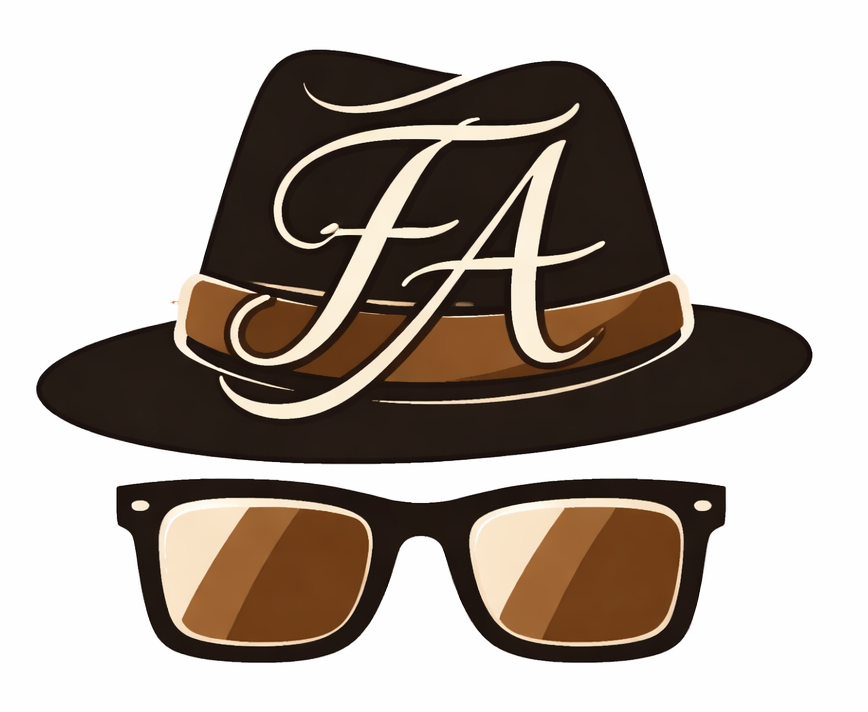

Fabian Araque
Soy músico, creador audiovisual y desarrollador de universos musicales.
Mi trabajo explora la relación entre sonido, imagen y narrativa, construyendo proyectos
donde la música no solo se escucha, sino que también se observa y se recorre.
Soy elfundador de Dórach Records y creador de proyectos como Focaraque,
Hemiola y Síncopa y Río y Asfalto.
A través de estos proyectos investigo nuevas formas de compartir la música:
desde animaciones y relatos visuales hasta experiencias pedagógicas y documentales sonoros.
La música puede ser escuchada, pero también puede ser observada, narrada y recorrida. Mis proyectos exploran ese territorio donde el sonido se encuentra con la imagen y el relato.